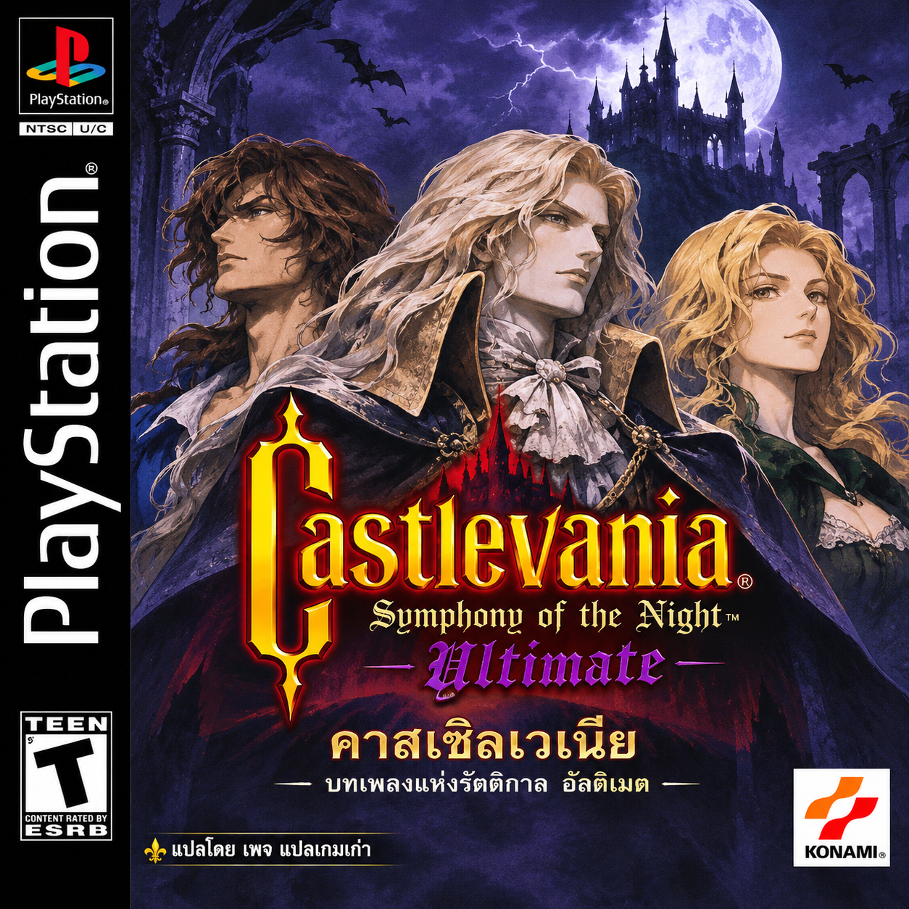

Castlevania: Symphony of the Night
Ultimate PS1 v1.3 ภาษาไทย
build045 · รุ่นทดสอบ · แปลโดยเพจแปลเกมเก่า
เผยแพร่ (เวลาไทย)

สิ่งที่เพิ่ม
- ชื่อไอเทมไทย 269 รายการในเมนู ร้านค้า และชุดข้อความเก็บของที่รองรับ
- ชื่อเฉพาะร้านค้า 7 รายการ คำอธิบายเพิ่มเติม 95 รายการ และคัมภีร์ร้านค้าอีก 5 รายการ
- คง EXP ตามเดิม เพิ่มเครดิตบนไตเติล และแก้ปัญหาฟอนต์/แพ็กเก็ตภาพของเมนู
ตรวจร้านค้าและท่าวิญญาณในโปรแกรมจำลองแล้ว การตรวจแพตช์เป็นการตรวจไฟล์แยกจากการเล่นเกม ยังไม่ได้เล่นจบทุกฉากทุก DUB และป้ายระบบบางส่วนยังเป็นอังกฤษ
แปะแพตช์ในเครื่องของคุณ
- ใช้ SOTN Ultimate (PS1 Version) v1.3.bin ต้นฉบับ ขนาด 684,653,088 ไบต์ ตาม SHA-256 ด้านล่าง ไฟล์เกมไทยรุ่นเก่าและเกม PS1 ปกติใช้ไม่ได้
- เลือก BIN แล้วกดแปะแพตช์ ระบบตรวจต้นฉบับและผลลัพธ์ก่อนเปิดดาวน์โหลด ไฟล์เกมประมวลผลในเครื่อง ไม่อัปโหลดขึ้นเซิร์ฟเวอร์
- ดาวน์โหลด BIN และ CUE ลงโฟลเดอร์เดียวกัน แล้วเปิด CUE ใน DuckStation โหลดเซฟจาก Memory Card
ไฟล์ต้นฉบับไม่ถูกเขียนทับ หากย้อนกลับให้เปิด BIN/CUE ต้นฉบับที่คุณเก็บไว้ แนะนำ Chrome หรือ Edge บนคอมพิวเตอร์ และมีพื้นที่ว่างสำหรับดาวน์โหลดประมาณ 700 MB